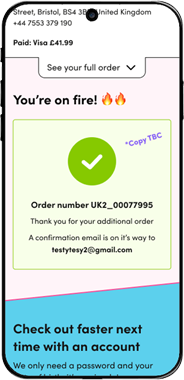
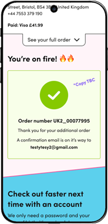
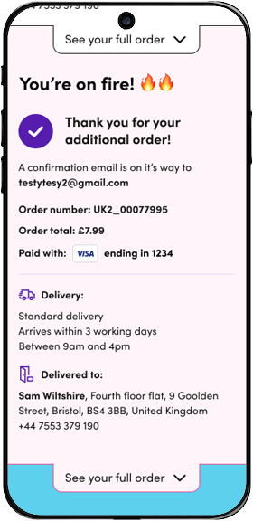
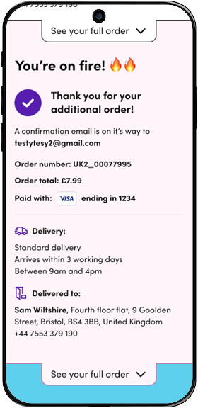

Confirmation Page
The average time a user spent on their confirmation page was over 2 minutes and 29% of users didn’t end their journeys there. Which meant, this was an excellent page for the UX team to review and optimize!
See the final design
After conducting intial user testing, I learned that we needed a dynamic "Quick Buy" component. I outlined the task flow to define how and when users would interact with this new component. After testing multiple iterations, the final design communicated a time limit for free shipping and suggested products found to be more enticing based on the user testing results.
Goal
By optimizing our confirmation page, we could increase revenue by £45K per year on the UK site alone. My goal was to find the most effective way to encourage additional purchases through the “Quick Buy” element.

 

Research & Discovery
I started by testing a solution the global team designed. The
experience initially offered a “Quick Buy” element that led to a
separate order. User testing proved that, overwhelmingly, users
were either dissatisfied or misunderstood that they’d have to
pay additional shipping fees. They expected that any additional
purchases would be added to their first order.
I voiced that this was not just a problem for users but, in
North America, we had low brand awareness and this could push
users to other, more well known, shops.
“If the company wants me to make a quick order, there needs to be some advantage to it.”
-stefandigital, UK participant
Challenges & Solutions
Hearing the user feedback, I knew I needed to figure out how to
change the element from a “Quick Buy” to an “Add to order”
element. I designed a new task flow to show how to do this on
the back-end. This included a 15-minute delay from placing the
order to sending it to the warehouse.
In the design, I’ll need to add a timer and define how it’d be
visible when users left the confirmation page. Users will also
need a notification when their time was up.

Design Process
Moving from lo-fi to hi-fi wireframes, I began ideating. I designed and tested several ways to encounter the add-on component and the timer notification.
User Testing
The results from users testing the timer notification, participants:
- appreciated seeing product images
- preferred having vibrant colors
- understood how to interact with the notification drawer
- preferred to have everything visible without having to scroll
- needed additional messaging to make the opportunity more clear
“I like the additional message, “Would you like to continue shopping?”
- amymarie03, UK participant
Final Design

 

Based on the user testing results, the final design has the “Add to order” element inside the page layout. The element should show best sellers, recommendations based on the order, offers, and smaller ticket items that customers may never buy alone. This reflects the data collected from shoppers who continued their journey after seeing this page.
When the timer ends, users get a notification drawer that moves in from the bottom of their screen. While closed, I animated the alarm clock icon to catch a user’s attention. When open, the icon becomes a stationary alarm clock to ease cognitive load. In the open drawer, users had the option to save their items, which could help increase account creation, or continue shopping with a new order.
Reflection
This project is currently in the developers’ hands (as of Jan 2024). For myself, this was an excellent learning experience in interaction design. Having multiple testing sessions allowed for ideation that supported users by means of a new overall solution. We worked as a team to move faster by testing our top designs, based on development complexity and applying past learnings.
This was also a win in communication between the PM and UX teams. I was able to communicate the need to provide exemplary service by allowing an add-on option, which makes shoppers happy.